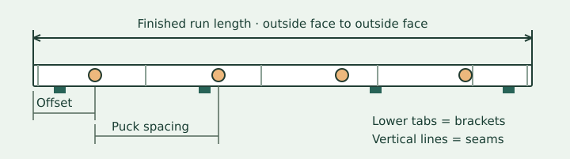
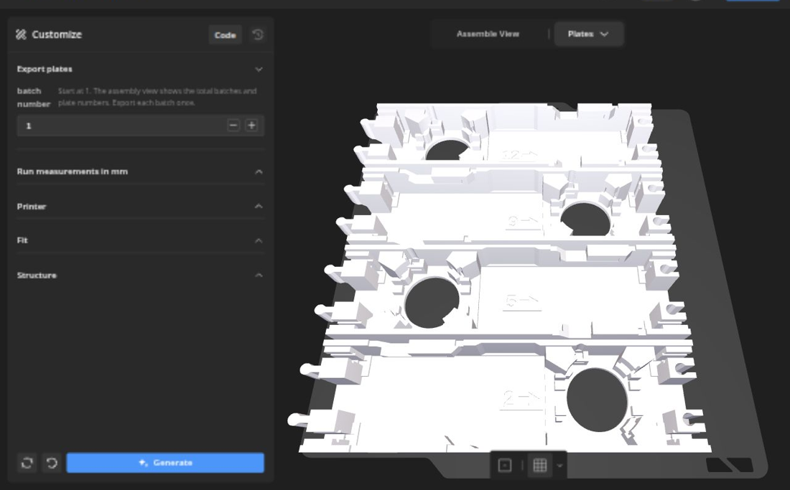
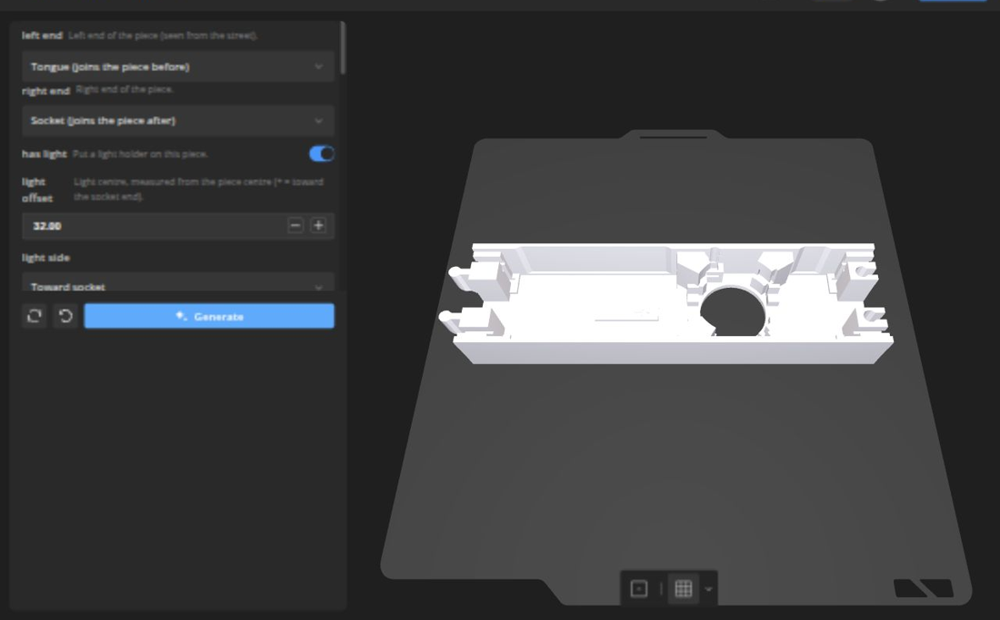
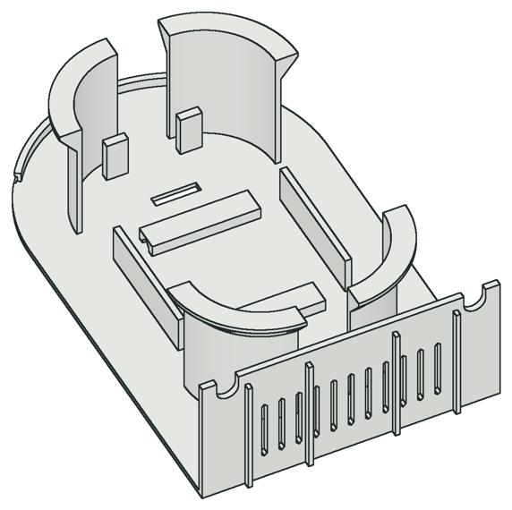
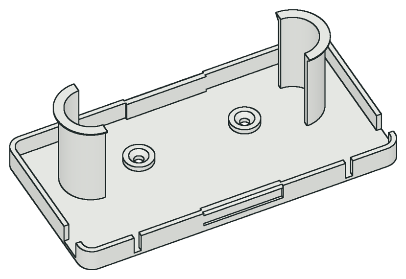
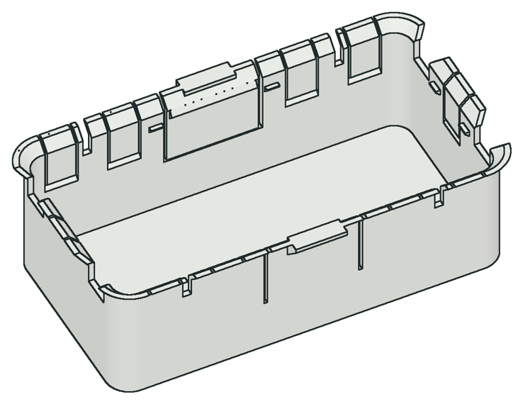

Configure your Festavia track
Plan one straight run at a time. All exposed MakerWorld dimensions are in millimetres. A corner or change of roof plane starts another independently supported run.

Measure from one zero
Face the installation from outside. Choose the left outside cap face as zero. Measure the finished straight length, desired puck centre-to-centre spacing and cable exit at each end. If you must hit an existing bracket, record its centre from that same zero. Check space for the 56 × 28 mm channel, cap ears and lever access. The visible face sits 38 mm below the bracket mounting plane.
Cap-to-cap ______ mm · Puck pitch ______ mm
Usable printer bed ______ × ______ mm · Wire exits ______
First puck if fixed ______ mm · Existing bracket centres __________
Choose the file for the job
Unzip the community download. Sign in to MakerWorld Parametric Model Maker. Choose Creator Portal → Open SCAD File. Close the Code drawer to bring the settings and preview into view.
| Open | What you can make |
|---|---|
| Festavia-Run.scad | A full run, numbered sections, brackets, joint hardware, caps and gates. |
| Festavia-Section.scad | A replacement section or a joint or holder/receiver fit sample. |
| Festavia-Accessories.scad | Optional cable or power-supply box, its matching lid or cover, shims and clips. |
Set the run to match your house
Start with the geometry. The planner fits the puck count to the length and pitch, then finds room for brackets, joints and pins.
| MakerWorld control | How to set it |
|---|---|
| Run length | 304.8–15,240 mm, outside cap face to outside cap face. Multiply inches by 25.4. |
| Light spacing | 304.8–533.4 mm, centre to centre. Check your string reaches with slack through every gap. |
| Light placement | Automatic centres the pattern and can shift it slightly to fit. Choose Fixed to hold a measured first-light offset from the left cap. |
| Light margin min | Minimum distance from either end to a puck centre. Default 101.6 mm, minimum 57.2 mm. A fixed offset must also meet this margin. |
| Bracket spacing max / end max | Defaults are 609.6 mm between centres and 203.2 mm from cap to first or last bracket. Lower limits request closer support. Position each bracket over solid backing. |
| Bracket centres mm | Leave blank to plan automatically. For existing backing, enter all measured centres in increasing order separated by commas. Use numbers only. The span, end and clearance checks still apply. |
| Start gate / end gate | Left and right ends as seen from outside. Select Wire at every entry or exit and Blank at any closed end. Both ends can pass cable. |
| Bed X / Bed Y | Enter the actual usable rectangle, 180–400 mm on each axis. A smaller bed can produce more sections for the same puck count. |
Keep the mechanical interfaces at 100% scale
A0 is the installed joint fit. A− and A+ change joint fit by 0.05 mm. Use a coupon to choose a variant. Installed shell uses a 1.6 mm face and 1.8 mm sides between features. Reinforced uses 3.2 mm for both. Custom lets you choose a 1.6–3.2 mm face and 1.8–3.2 mm sides.
Generate and check the plates
Change one measurement, select Generate, and check Assemble View before exporting.
| Length | Pitch | Bed | Pucks | Sections | Plates |
|---|---|---|---|---|---|
| 4,572 mm | 406.4 mm | 256 × 256 | 11 | 27 | 12 |
| 3,048 mm | 406.4 mm | 256 × 256 | 8 | 18 | 9 |
| 3,048 mm | 406.4 mm | 180 × 180 | 8 | 24 | 15 |

Select Plates to inspect the printable parts. Assemble View shows orange pucks, vertical seam marks and lower teal bracket marks.
- Check the puck count against the string you have. Check supports land on suitable backing and the selected gates face your cable route.
- Download → choose your matching printer → Confirm → Download. A run exports up to 16 plates per 3MF. Save each file with its batch number.
- If the diagram shows more batches, increment Batch number only, regenerate, and repeat. Local plate numbers restart in each file. With the nine-plate example and four plates per file, export batches 1, 2 and 3 for plates 1–4, 5–8 and 9.
- Open each 3MF in Bambu Studio. Select the actual printer, bed, nozzle and filament. A reference P1S download opened with PLA selected. Use PETG for the reference fit. Slice each plate and inspect the layer preview.
Customize a single section
Open Festavia-Section.scad when replacing a piece or trying a new holder position.

- Under Output, choose Track section. Start with the 180 mm default. For a visible change set Piece length to 207.5, keep the holder 32 mm to the right of centre, then select Generate. The bore stays 35.2 mm.
- Measure length between end faces. A left tongue adds about 11 mm to the printed extent. Choose Tongue on the left and Socket on the right for a middle section. Choose Cap at an outside end.
- Enable the light holder or bracket receiver you need. Enter the offset magnitude from the section midpoint and select its side. Each feature centre needs at least 50.6 mm from a joint end or 53.6 mm from a cap end. A puck and receiver on the same piece need 62 mm between centres.
- Enter a short piece label if needed. Regenerate after each change. For a physical calibration sample, select Joint fit test or Holder and receiver test under Output. The latter supplies the two track sample sections. Source the mating ring, pins, bracket and lever from the run hardware.
If Generate cannot find a layout
Confirm millimetres, bed axes and end distances. Try automatic light placement and automatic bracket centres to isolate a conflict. Restore any positions required by your backing before export. On a single section, lengthen it or move the feature away from an end. If a larger bed solves the layout, select it only when that printer is available.
Choose optional boxes and clips
Open Festavia-Accessories.scad in MakerWorld or choose Boxes & clips in the offline workbench. The box dimensions preserve the fit to the original bases and lids.




| Choose this kit | Select and export these components |
|---|---|
| Surplus low-voltage cable | 1 Cable box base + 1 Cable box v2 lid. Its largest footprint is 143.8 × 83.8 mm. A 180 mm bed fits these parts. |
| Arched supply cradle | 1 Power supply cradle + 1 Power supply v2 cover. If the backing is uneven, add up to 2 Siding shims. Reserve space for both parts. The cover footprint is 142.8 × 241.9 mm and its print height is 87.4 mm. |
| Cable route only | Select Flat-wire clip or Round-cord clip. Count the clips for your route. Existing run-generator clips fit this system. |
- Select Component. Enter your bed X and Y. For clips or shims set Small part copies (1–40). Each box component exports one per selection.
- Generate, verify the selected part and quantity, then download. Repeat for the matching lid or cover. Each selection is independent. Or open the corresponding
accessories/partsSTL directly in your slicer at 100% in millimetres. - The accessory model reserves 4 mm on all sides and can turn the layout 90°. A 256 × 256 mm bed fits the full-size power-supply cover. A 180 × 180 mm bed fits the cable box and clips. Reduce copies when a group will not fit. Use a larger bed for an oversized shell.
- The reference parts use PETG, a 0.4 mm nozzle and 0.2 mm layers. Keep the print orientation supplied: box bases back-down, lids face-down, flat clips show-face down and round clips on end. Check the layer preview before printing.